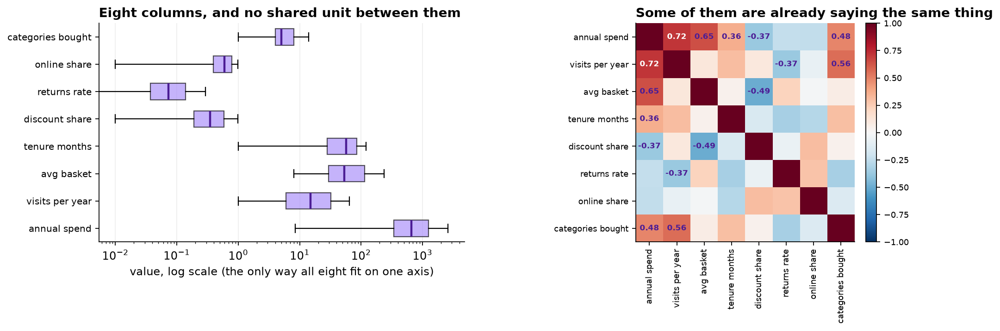
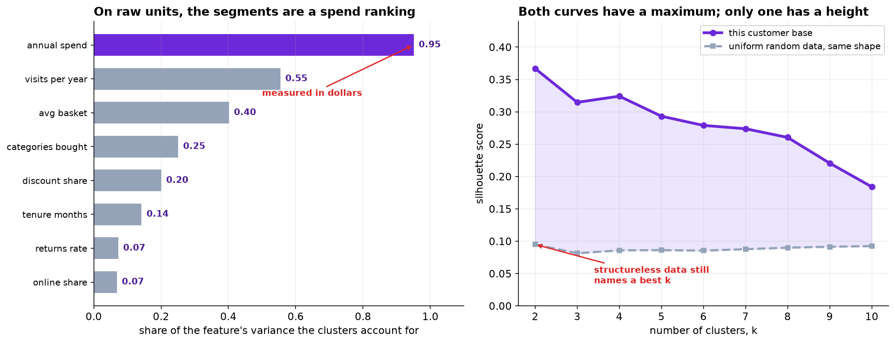

The brief asks for four or five segments with names. It does not ask whether there are any, and no clustering algorithm will ever raise the question, because every one of them returns exactly as many groups as it is told to.
- Setting
- Twelve months of loyalty-account behavior from a general retailer: 5,693 usable accounts with spend, visits, basket size, tenure, discount use, returns, online share and category breadth.
- The question
- How many customer segments does the behavior actually support, and are they stable enough to build a year of marketing spend on?
- Why it matters
- Segments get names, owners and budgets. A segmentation that is really a spend ranking, or that assigns every customer to a group when most belong to none, sends money at people who were never a group.
- What we do
- Show that the units decide the answer, run silhouette and stability and find they agree with each other and are both wrong, use a variable held back from the clustering to pick k, let a density method say what k-means cannot, and then open the answer key.
Silhouette and stability both chose two segments. A campaign response variable the clustering never saw chose four, and the answer key confirms it: agreement with the truth runs 0.32 at k = 2 and 0.92 at k = 4. DBSCAN independently found that 55 percent of the base belongs to no segment at all, against a true figure of 55 percent.
The Units Decide the Answer
Before any question about method, a question about arithmetic. annual_spend has a standard
deviation of 2,135 and discount_share has one of 0.248, a ratio
of about 8,600 to 1, entirely because one is denominated in dollars and the other is a
proportion. Euclidean distance adds up squared differences, so run k-means on the raw columns and see what
happens.

| Cluster | n | Annual spend | Visits | Basket | Discount share | Online share |
|---|---|---|---|---|---|---|
| 0 | 3,675 | $442 | 12.1 | $57 | 0.42 | 0.61 |
| 3 | 1,151 | $1,405 | 27.2 | $63 | 0.50 | 0.59 |
| 1 | 520 | $5,017 | 37.3 | $138 | 0.15 | 0.44 |
| 2 | 347 | $7,875 | 48.0 | $164 | 0.14 | 0.44 |
The clusters account for 95 percent of the variation in spend and 7 percent of the variation in how much a customer shops online. Clusters 1 and 2 are indistinguishable on every behavioral column and differ only in size of wallet.
This is not a segmentation. It is a ranking of customers by spend with four names on it, and a sort would have produced it faster.
Rescaling each column to unit variance is the usual fix and it asserts something: that one standard deviation of discount rate matters as much as one standard deviation of spend. That is a claim about the business. Weighting by contribution to margin would be equally defensible and would draw different boundaries. Whoever chooses the units chooses the segments, and there is no test that settles it, only an argument.

Two Internal Criteria, Both Wrong
On the standardized data, silhouette peaks at k = 2 with 0.367, against 0.315 at three and 0.324 at four. Run the identical procedure on uniform random data of the same shape and it peaks at two as well, at 0.095.
There is nothing in that second dataset and the procedure still names a best k. It has to: k-means partitions whatever it is given and silhouette compares partitions. What the comparison does give is a scale. Real data 0.37, structureless data 0.09, a factor of four. That gap is the evidence there is structure, and it is the number nobody quotes.
Stability asks a better question: if these segments are real, they should survive re-estimation on a different sample of customers.
| k | Real data | Structureless data |
|---|---|---|
| 2 | 0.998 | 0.230 |
| 3 | 0.997 | 0.162 |
| 4 | 0.994 | 0.151 |
| 5 | 0.987 | 0.198 |
| 6 | 0.944 | 0.223 |
| 7 | 0.823 | 0.226 |
Adjusted Rand index between the full solution and a refit on an 80 percent subsample, averaged over 25 replications.
The contrast between the columns is enormous. On real data a refit on different customers reproduces the same partition almost exactly; on structureless data it agrees with itself barely at all, because the boundaries land somewhere different every time.
Stability is a good test of whether structure exists and a weak test of how much of it there is. It is above 0.98 for every k from two to five, so it cannot separate them, and its maximum is again at two.
So two well-regarded criteria, in agreement, both pointing at two segments. Marketing asked for four or five.
The Variable the Algorithm Never Saw
campaign_response records who responded to a price-off campaign run the quarter after this
window. It was held out of every clustering. If a partition is picking up something real about how customers
behave, its clusters should differ in how they responded. If it is slicing a continuum, they will differ a
little and smoothly.
| k | Lowest cluster | Highest cluster | Spread | Agreement with the answer key |
|---|---|---|---|---|
| 2 | 0.055 | 0.209 | 0.154 | 0.321 |
| 3 | 0.054 | 0.235 | 0.181 | 0.568 |
| 4 | 0.053 | 0.476 | 0.423 | 0.848 |
| 5 | 0.054 | 0.488 | 0.434 | 0.577 |
| 6 | 0.054 | 0.489 | 0.435 | 0.471 |
| 8 | 0.054 | 0.495 | 0.441 | 0.381 |
There is the elbow, and it is not subtle. Going from three clusters to four more than doubles the spread in response, from 0.18 to 0.42. Going from four to five adds 0.011, and every further split adds a fraction of a point.
Four segments, not because a fit index peaked there, but because the fourth split separates customers who respond to a price-off campaign at 48 percent from customers who respond at 5 percent, and the fifth split separates nothing.
The number of clusters is chosen by evidence from outside the clustering. If no such variable exists, k is not identified by the data, and the honest answer to "how many segments are there" is a question back: what are the segments going to be used for?
What k-Means Cannot Say
Every point gets a cluster. There is no way for k-means to report that a customer sits in the middle of the cloud and belongs to nothing in particular, which is a problem if that describes most of the customer base. DBSCAN can: it grows clusters out of dense regions and labels everything else noise.
| Cluster | n | Response rate | Visits | Basket | Discount | Returns | Reads as |
|---|---|---|---|---|---|---|---|
| 0 | 877 | 0.483 | 33.5 | $27 | 0.79 | 0.07 | Bargain hunters |
| 1 | 661 | 0.100 | 3.5 | $130 | 0.30 | 0.24 | Occasional gift buyers |
| 3 | 181 | 0.039 | 38.1 | $149 | 0.14 | 0.04 | Loyal high spenders |
| 2 | 819 | 0.126 | 9.3 | $42 | 0.33 | 0.06 | A dense patch of continuum |
| noise | 3,155 | 0.144 | 20.8 | $76 | 0.34 | 0.09 | No segment |
More than half the customer base is not in any segment. DBSCAN finds four dense regions covering about 45 percent of accounts and declines to classify the rest. That is an unwelcome answer and a useful one: a plan that assigns every customer to a segment and a treatment is planning for a base that does not exist.
Cluster 2 is the interesting failure. Its profile is unremarkable and its response rate of 0.126 is indistinguishable from the 0.185 base rate. It is a dense patch of the continuum rather than a group, and it is exactly the kind of thing that gets a name and a budget if nobody checks. The clue was available without the answer key: it did not separate anything.
Note also how sensitive DBSCAN is to its radius. At 0.7 it finds two clusters and calls 92 percent noise; at 1.5 it merges everything into one. That parameter does the same job k does, and it is chosen the same way: by what the resulting partition separates.
The Answer Key
This dataset was generated, so the truth is known and ships with it. On real data this section does not exist, which is the reason for building the argument in the order above before opening it.
| k | k-means | Ward |
|---|---|---|
| 2 (what silhouette and stability chose) | 0.321 | 0.316 |
| 3 | 0.568 | 0.586 |
| 4 (what the external check chose) | 0.848 | 0.924 |
| 5 | 0.577 | 0.601 |
| 6 | 0.471 | 0.527 |
Adjusted Rand index against the true segment labels. DBSCAN, on the 2,538 accounts it was willing to classify, scores 0.963.
Everything the external check said turns out to be right and everything the internal indices said turns out to be wrong. Three further things are worth noting.
DBSCAN's noise fraction was 55.4 percent against a true 54.5. It identified the size of the unstructured middle to within a percentage point without being told there was one.
Ward beat k-means at every k from three to six. The true segments are not equally sized or equally spread, and k-means prefers clusters that are.
Silhouette and stability were not useless. They established that structure existed, which is a real question that was worth answering. They could not count it. Counting it needed evidence from outside.
![Left: two curves against the number of clusters. The spread in campaign response rises from 0.15 at k equals 2 to 0.42 at k equals 4 and then flattens at about 0.44. The agreement with the answer key rises to 0.85 at k equals 4 and falls away after it. A dotted vertical line marks four. Right: a table of DBSCAN clusters against the true segments, showing cluster 0 holding 855 bargain hunters, cluster 1 holding 653 gift occasionals, cluster 3 holding 180 loyal high spenders, cluster 2 holding 819 accounts all from the unstructured middle, and the noise label holding 2,251 unstructured middle accounts plus 682 loyal high spenders.](../assets/img/capstone-clustering-external.png)
What This Does Not Settle
Segments are a description of one year. Nothing here says a customer stays in theirs. A retention plan built on these groups needs the transition rates between them, which requires a second year and is a different analysis.
The scaling choice remains an assumption. There is no test that settles whether a standard deviation of returns rate should count for as much as one of spend, only a business argument, and the boundaries move with the answer.
The external variable validates the partition for one purpose. These four segments separate response to a price-off campaign very well. They may separate response to a loyalty program or a service change badly. A segmentation is not true or false, it is useful, and useful is always useful for something.
And the unstructured middle is a finding, not a failure. Most customer bases are mostly continuum. The interesting question about the 55 percent is not which segment to force them into, but whether there is anything worth doing for them at all.
What to Watch
- ✓Standardize, and say out loud what standardizing assumes. On raw units the segments accounted for 95 percent of spend and 7 percent of online behavior.
- ✓Run your whole procedure on structureless data of the same shape. It will return clusters, and the score it returns is the yardstick your real score has to beat.
- ✓Read the height of a validity index, not the position of its maximum. 0.37 against 0.09 is the finding; the argmax at two was wrong.
- ✓Stability detects structure; it does not count it. Above 0.98 for every k from two to five here.
- ✓Choose k with something the algorithm never saw. If nothing was held back, k is not identified and the number is a decision rather than a result.
- ✓Let a method say "none of the above". k-means must classify everyone; density methods can report that most of the base is not in a group.
- ✓Be ready to deliver fewer segments than were asked for. The brief said four or five with names, and the honest answer included "and most of your customers are in none of them".
Clustering in Data Science & AI
| Where it appears | The same question, in a different costume |
|---|---|
| Customer and market segmentation | This chapter, and the commonest place the spend-ranking mistake is made |
| Anomaly and fraud detection | Density methods used the other way round: the noise points are the output, which is the next chapter |
| Document and embedding clustering | Topic discovery over text embeddings, where the scaling question is settled by the model and the k question is not |
| Single-cell genomics | Cell-type discovery, where the number of clusters is a scientific claim and is validated against marker genes held out of the clustering |
| Image and vector quantisation | k-means as compression, where nobody asks whether the clusters are real because the codebook only has to reconstruct |
Rousseeuw introduced the silhouette in 1987 and Tibshirani, Walther and Hastie's gap statistic in 2001 is the most principled of the internal criteria, comparing the within-cluster dispersion against a reference distribution in the same spirit as the noise comparison used here. Ben-Hur, Elisseeff and Guyon made the stability-based case in 2002 and Hennig's bootstrap work in 2007 turned it into a practical per-cluster diagnostic. Ester and colleagues introduced DBSCAN in 1996 and its noise label is the feature that matters most here; Campello, Moulavi and Sander's HDBSCAN removes the radius parameter that section 4 shows is doing so much work. The uncomfortable general result belongs to Kleinberg, whose 2002 impossibility theorem shows that no clustering function can satisfy three reasonable-sounding properties at once, which is a formal way of saying there is no view from nowhere about how many groups there are.
The full project, step by step
The companion notebook cleans the export, shows what raw units do to the partition, runs silhouette on the real data and on structureless data of the same shape, measures stability under resampling for both, uses the held-out campaign variable to choose k, fits DBSCAN across a range of radii, and only then opens the answer key to score every method against it.
The dataset
(capstone-clustering-choosing-k.xlsx) holds 6,190 loyalty accounts with a duplicated export
block, net-refund accounts recorded as negative spend, unmigrated join dates coded as −1, a held-back
campaign response, and a sealed answer key. Two written reports accompany it: a
plain-language brief for the marketing director, and a technical report
covering scaling, the validity indices, the external criterion and the density method.
🎓 Key Takeaways
- ✓On raw units the segments were a spend ranking, accounting for 95 percent of spend and 7 percent of online behavior.
- ✓Uniform random data produces a silhouette curve with a maximum. Every method returns clusters, including on data that has none.
- ✓Silhouette and stability both chose two. Stability was above 0.98 for every k from two to five, so it could not tell them apart.
- ✓A held-out campaign variable chose four, doubling the response spread at the fourth split and adding 0.011 at the fifth.
- ✓DBSCAN found 55 percent of the base in no segment, against a true 54.5, which was the answer nobody asked for.